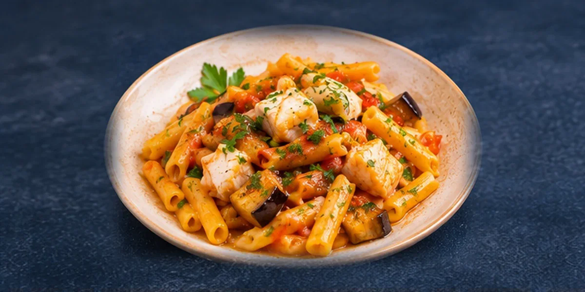
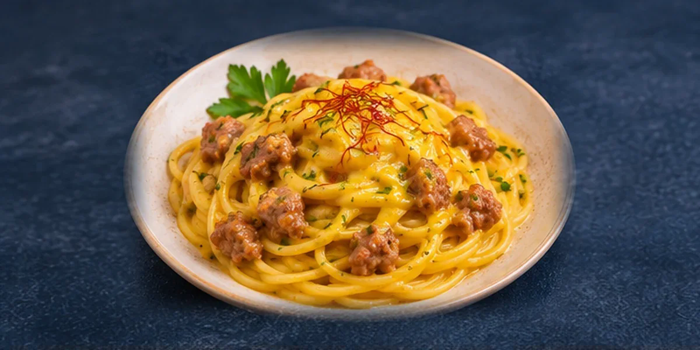
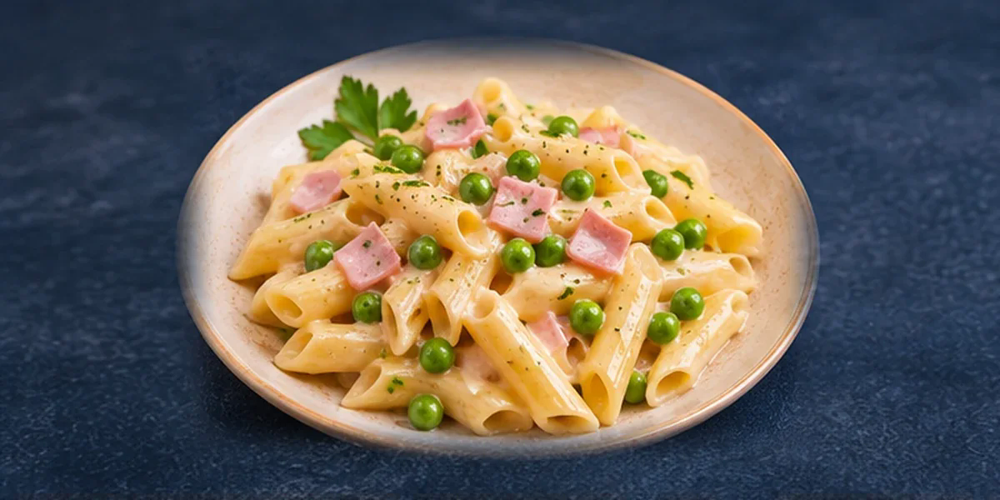
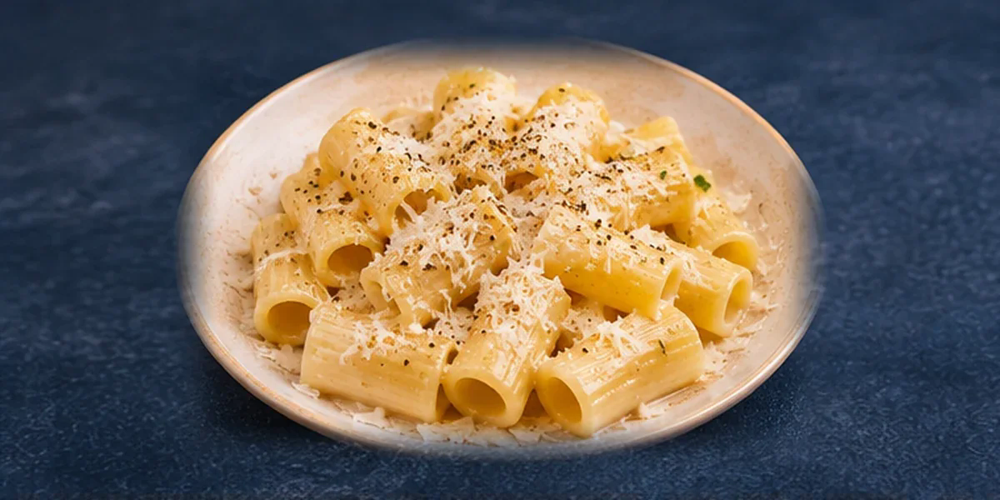
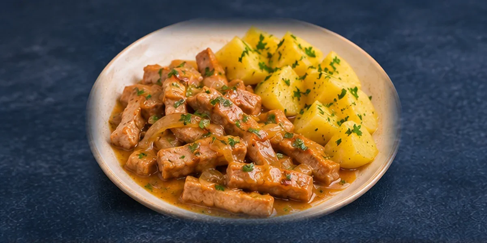
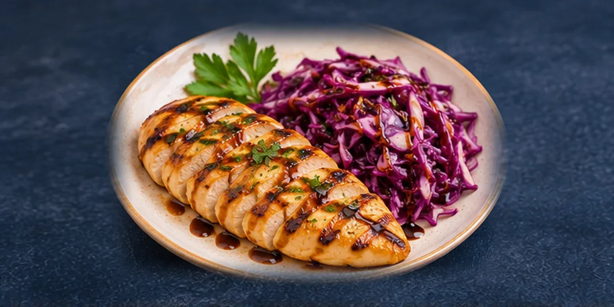
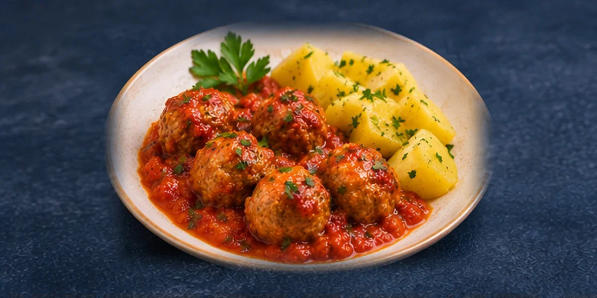

Casarecce con melanzane e branzino (poco pomodoro)
Il sapore delicato del branzino incontra le melanzane, con un leggero tocco di pomodoro.
0104
Valido solo a pranzo,
nel giorno sotto indicato

Il sapore delicato del branzino incontra le melanzane, con un leggero tocco di pomodoro.
0104

La salsiccia dona carattere agli spaghetti, mentre lo zafferano e un velo di panna legano i sapori.
0107

La dolcezza dei piselli e del prosciutto cotto incontra la cremosità della panna.
0107

Il gusto deciso del formaggio incontra il profumo del pepe in un condimento essenziale e cremoso.
0107

Lonza di maiale in straccetti, insaporita alla birra e servita con patate profumate al prezzemolo.
01

Pollo grigliato accompagnato dalla freschezza croccante della verza viola e da una nota di aceto balsamico.

Polpettine morbide al sugo di pomodoro, accompagnate da patate lesse insaporite con prezzemolo.

Finocchi croccanti, arance e avocado accompagnano i bocconcini di salmone fresco, conditi con aceto balsamico.
04
Le immagini dei piatti, pur realistiche, sono generate con intelligenza artificiale e hanno scopo illustrativo.
Attendere la conferma del Ristorante per considerare valido l’ordine.
Persone indicate nelle richieste via WhatsApp: 0
Dato indicativo: richieste avviate, non prenotazioni confermate. Azzeramento ogni giorno alle 15:00.